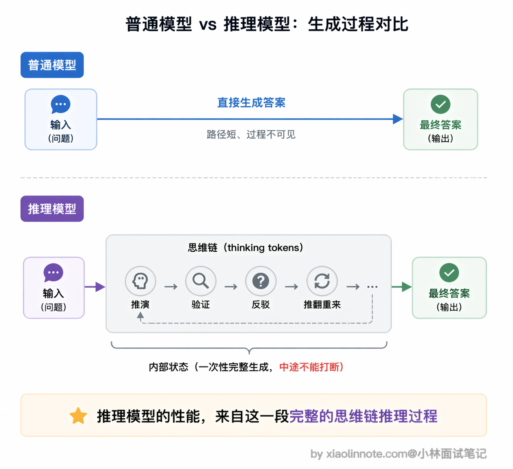
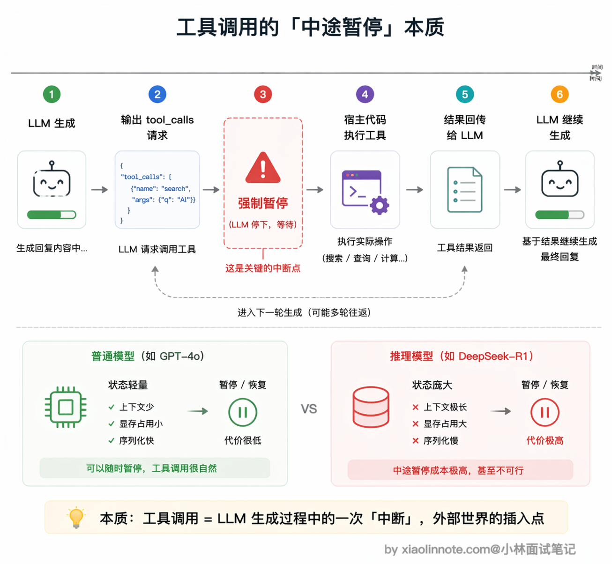
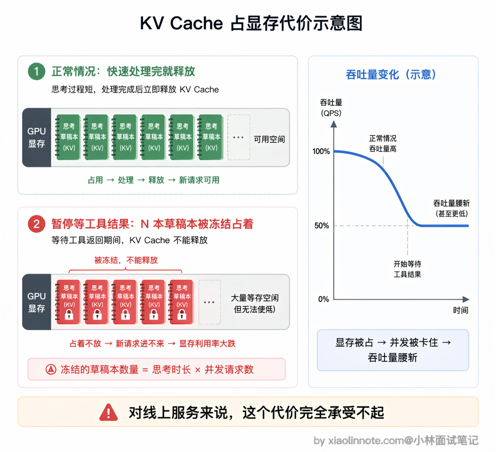
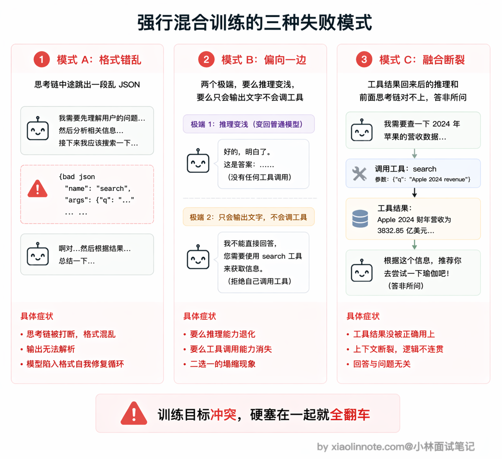
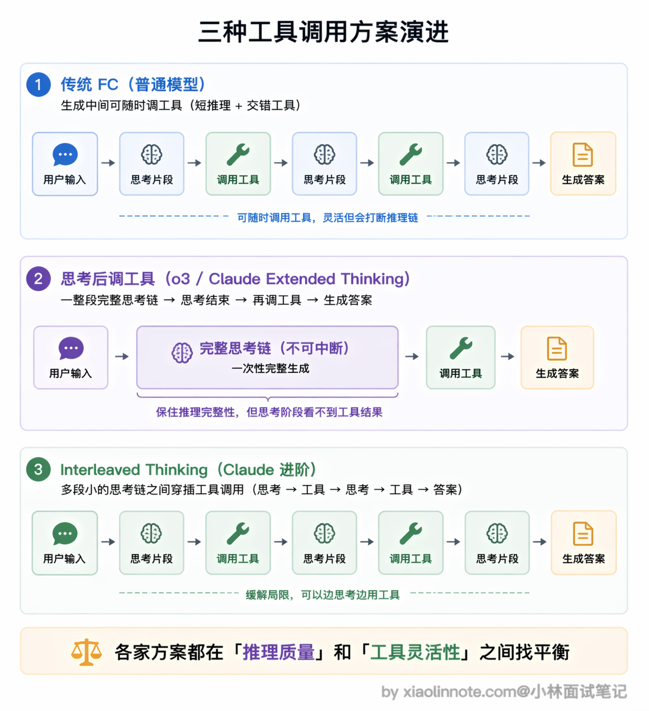
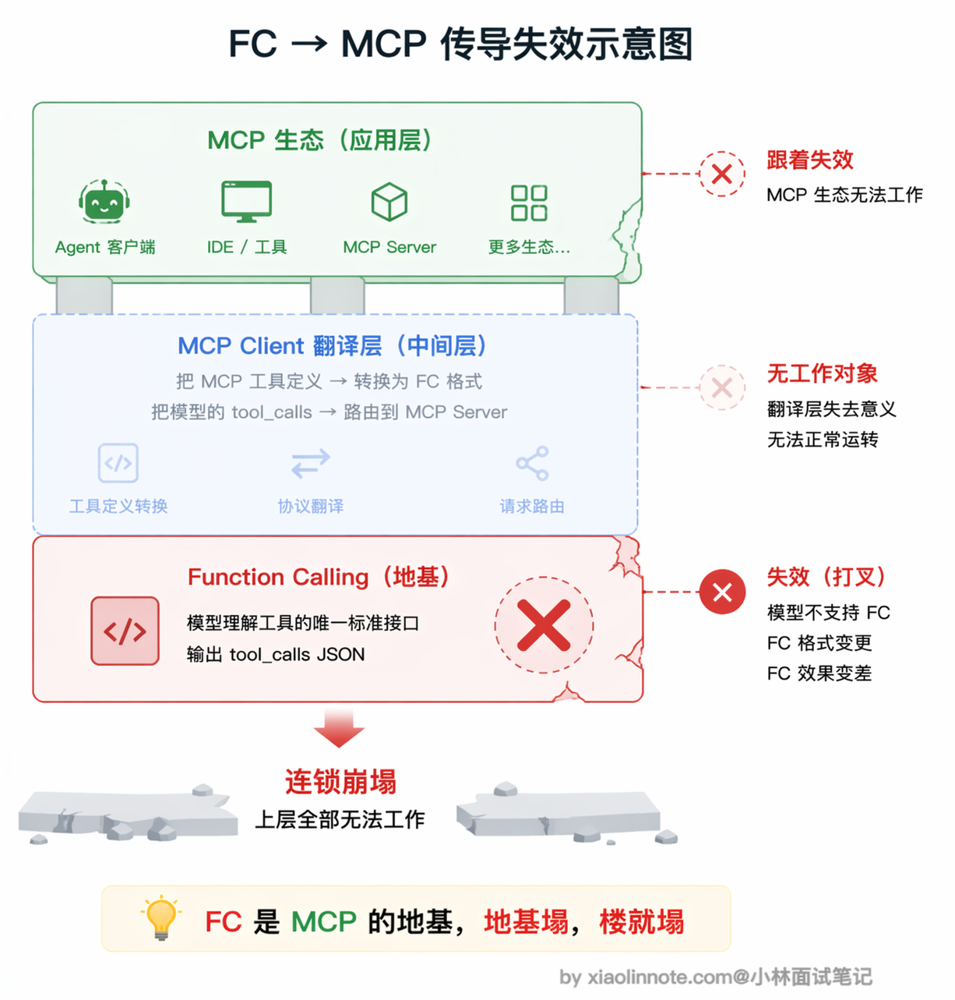

本篇目录
8. 为什么有些特定的推理模型不支持 MCP 协议？
👔面试官：为什么有些推理模型不支持 MCP 协议？
🙋♂️我：应该是这些模型比较新，还没来得及做 MCP 的适配吧，等厂商更新一下 SDK 就能支持了。
👔面试官：这不是适配不适配的问题。MCP 底层靠什么驱动的？如果模型连 Function Calling 都支持不了，MCP 怎么可能用得起来？你得想想推理模型在生成机制上和普通模型有什么不同。
🙋♂️我：嗯，推理模型会先生成思维链再回答。那是不是因为思维链太长了，占满了上下文窗口，没空间放工具定义了？
👔面试官：上下文窗口不是核心矛盾。关键是推理模型的思考过程是一次性连续生成的，不能中途打断，而工具调用天然需要在生成过程中暂停去等外部执行结果。这两种生成范式是冲突的，你想想为什么冲突、后来又是怎么解决的。
这个问题的本质是生成范式的冲突，下面我从推理模型的工作机制开始，把这个冲突的来龙去脉讲清楚。
💡 简要回答
我理解根本原因是两者的生成范式有冲突。
推理模型在给出答案之前，会先跑一段完整的「思维链」，这个 thinking 过程是一次性连续生成的，不能中途打断。但工具调用天然是多轮交互：模型输出调用请求、暂停等工具执行、拿到结果再继续生成，这两种模式没法兼容。你没法在思考链跑到一半的时候暂停去等工具结果，否则之前的推理上下文全断了。
而 MCP 底层就是靠 Function Calling 驱动的，推理模型连 Function Calling 都支持不好，MCP 自然也用不了。
当然这个问题不是无解的，后来 o3 和 Claude Extended Thinking 都找到了折中方案，比如让工具调用发生在思考阶段结束之后，保证思考过程还是一次性完整生成的。
📝 详细解析
先弄清楚推理模型是什么
普通模型的工作方式很直接：问题进来，答案出去，收到输入就开始生成 token，一路生成到结束。
推理模型（Reasoning Model）不一样。它在给出最终答案之前，会先生成一大段「内部思考」（thinking tokens），在思考里自言自语地推演、验证、反驳，甚至推翻自己前面的结论重来，直到把问题想清楚了，再输出面向用户的最终答案。代表模型有 OpenAI o1/o3 系列、DeepSeek-R1、Claude 的扩展思考（Extended Thinking）模式。

这套「先思考再回答」的机制，正是推理模型在复杂推理、数学、代码问题上比普通模型强的根本原因。但也正是这个机制，和工具调用产生了根本冲突。
工具调用的本质是「中途暂停」
要理解冲突，先要搞清楚工具调用的完整流程。
工具调用不是一次性生成完成的，它天然是多轮交互：第一步，模型生成调用请求，表达「我要查北京天气，调 get_weather 工具，参数是 city=北京」；第二步，停下来等宿主程序去执行这个工具；第三步，拿到工具返回的结果；第四步，继续生成，把工具结果纳入后续推理，最终给出答案。
整个流程的核心是第二步，模型生成到一半，强制暂停，等外部执行完毕，再恢复生成。对普通模型来说，这没有问题，因为它的状态很轻量，随时可以截断再重新启动。

直觉类比，写推理过程中途被打断
推理模型遇到这个「中途暂停」会是什么感觉？
想象你正在心无旁骛地写一篇复杂的推理论文，脑子里已经建立了一整套逻辑框架，各个论点之间的关系都串起来了，正处于思维最活跃的时刻。
突然电话来了，你放下笔去接了 20 分钟电话，再回来坐下，很多细节想不起来了，之前好不容易建立的推理脉络断了，只能重新梳理。
推理模型的思考链就是这种东西。它是一个依赖完整上下文的连续生成过程，每一步推理都建立在前面所有推理内容的基础上，整条链是一个有机整体。
中途强行打断，之前建立的推理状态会断掉，模型没办法从中间接着想，只能整个重来。
「那保存状态再恢复不就行了？」
有人可能会问：那暂停时把状态保存起来，工具执行完再恢复，不就解决了？
听起来好像可行，但实际代价很大。你可以把模型推理时的中间状态想象成一本「思考草稿本」，上面记满了到目前为止每一步推理积累下来的脉络（技术上叫 KV Cache，是模型缓存注意力计算结果的结构，体积非常庞大）。一旦暂停，这本草稿本就得原封不动占着一块 GPU 显存，工具执行要几秒、几十秒，这块显存就一直被占着不能给别的请求用。工具执行完再接着想，显存占用翻倍、吞吐量直接腰斩，整体延迟也大幅上升。对一个需要同时服务成千上万请求的在线推理系统来说，这个代价是完全承受不了的。

更难解决的是一致性问题。思考过程中途接入工具结果，等于在模型「想到一半」时改变了输入。模型之前的思路是基于「我还不知道工具结果」建立的，突然工具结果来了，模型需要重新校准，之前的推理链和新来的工具结果可能是矛盾的，怎么融合？这个「思考状态一致性」的问题没有简单的解法。
训练目标上的冲突
除了生成范式，训练层面也有根本性的冲突。
推理模型的训练核心是：用强化学习（RL，通过奖励反馈让模型学会更好的行为）大量奖励「思考链完整且结论正确」的输出。模型接受了大量这类训练之后，会越来越倾向于「一直想、想到底」，把推理过程跑完整，这是它推理能力强的根本来源。
而 Function Calling 的训练恰好相反，需要模型学会在合适时机打断自己，从推理状态切换出来，输出一段结构化的 JSON 调用请求。这个行为和「持续深入推理」是相反的，要同时学好这两件事，训练数据的分布就要两边都兼顾。
如果强行把两种训练数据混在一起喂，实际会看到什么现象？常见的失败模式有三种：一是模型在思考到一半突然跳出来输出一段奇怪的 JSON，结果 JSON 格式还错了，两边都没干好；二是模型彻底偏向一边，要么思考链缩水变浅（变成普通模型），要么干脆不会输出工具调用；三是融合处的推理断裂，工具结果回来之后模型的后续推理和之前的思考链对不上，答非所问。所以早期推理模型宁可先放弃工具调用，也要先把推理能力做扎实。

早期推理模型的真实情况
OpenAI o1-preview 是最典型的案例，2024 年 9 月发布时明确不支持 Function Calling，官方文档直接标注了这个限制。不过要注意区分版本：o1-preview 是早期预览版，确实不支持工具调用；但 2024 年 12 月发布的正式版 o1 已经加上了 Function Calling 支持，说明 OpenAI 在后续版本中找到了兼容方案。DeepSeek-R1 早期版本也是类似情况，推理能力很强，但工具调用支持极弱甚至没有。
这些早期限制不是懒得做，而是上面这些结构性冲突导致的工程取舍：先把推理能力做扎实，再想办法处理工具调用兼容的问题。
后来是怎么解决的，折中方案
后续版本找到的工程解法是：让工具调用发生在思考阶段结束之后。
具体做法是：模型先把整个推理链完整跑完，进入「输出最终答案」阶段时，才触发 Function Calling 流程。这样思考过程仍然是一次性完整生成的，完全不被打断，推理质量得以保住。
代价是：思考阶段完全感知不到工具结果，模型只能基于自己的已有知识来推理，工具数据只有在「答案生成阶段」才能引入。
对于那种「需要先查到某个数据，再基于这个数据做复杂推理」的任务，这个方案是有局限的，模型没办法带着工具结果去深度推理。但对大多数场景来说，先想清楚再调工具已经够用。
o3 和 Claude Extended Thinking 走的都是这条路，所以它们现在已经支持工具调用了。而且 Claude 还进一步推出了 interleaved thinking（交错思考）模式，允许模型在多次工具调用之间穿插思考，而不是只能在所有思考结束后才调用工具，这在一定程度上缓解了「思考阶段感知不到工具结果」的局限。

但你要知道这个内在限制的本质仍然存在，各家的解法都是在「保证推理质量」和「支持工具调用」之间做权衡。
为什么不支持 Function Calling 就不支持 MCP？
这个传导关系很直接。
MCP 协议在底层完全依赖 Function Calling。整个调用链是这样的：MCP Client 先连上 Server，拉取工具定义，然后把这些定义转换成模型原生的 Function Calling 格式传给模型。接下来等模型输出 tool_calls，Client 再把调用请求路由到对应的 Server 执行，最后把执行结果喂回对话。
这个「工具定义 -> Function Calling 格式转换」就是 MCP 的翻译层，是整个链路的关键环节。
那如果推理模型不支持 Function Calling 呢？这个翻译层就完全失效了。工具信息没办法让模型理解，调用请求也无法被模型生成，整条链路从中间直接断掉了。
所以「推理模型不支持 Function Calling -> 不支持 MCP」是一个很自然的传导关系，不是 MCP 本身有什么问题，是底层能力缺失导致的连锁反应。

🎯 面试总结
回到开头的面试对话，最常见的误区有两个：一是以为不支持 MCP 只是「还没适配」，把结构性的技术冲突当成了工程进度问题；二是把原因归结为上下文窗口不够大，没有抓到真正的矛盾点。
面试回答这道题，必须讲清楚三个层次：第一，推理模型的思考链是一次性连续生成的，不能中途打断；第二，工具调用天然需要在生成过程中暂停等待外部执行，这和连续生成的范式冲突；第三，MCP 底层依赖 Function Calling，推理模型连 Function Calling 都支持不好，MCP 自然也用不了，这是一个传导关系。
如果能再补充后续的解决方案就更加分了：o3 和 Claude Extended Thinking 采用的折中方案是让工具调用发生在思考阶段结束之后，保证思考过程仍然完整连续。Claude 还进一步推出了 interleaved thinking 模式，允许在多次工具调用之间穿插思考，部分缓解了这个局限。
同时也要点出折中方案的本质权衡：各家的解法都是在「保证推理质量」和「支持工具调用」之间找平衡点。
对了，大模型面试题会在「公众号@小林面试笔记题」持续更新，林友们赶紧关注起来，别错过最新干货哦！